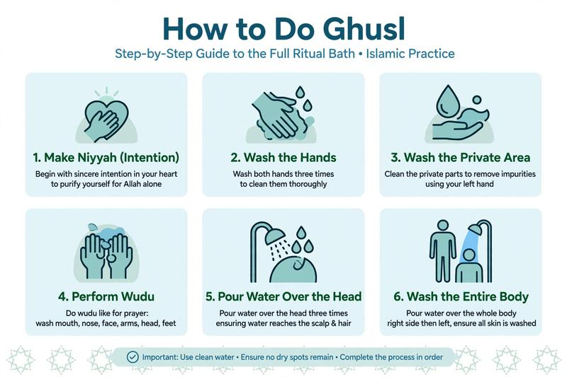

How to Do Ghusl in Islam: Complete Ritual Bath Guide [2026]

When do you need a full bath instead of just wudu? Many new Muslims get confused between wudu and ghusl. Ghusl is the full ritual bath required after major impurity, while wudu is for minor impurity.
In this complete guide, you will learn when ghusl is obligatory, the intention, and how to do ghusl step by step exactly as the Prophet ﷺ did.
Table of Contents
- When is Ghusl Obligatory in Islam?
- Difference Between Ghusl and Wudu
- How to Do Ghusl Step by Step (Sunnah Method)
- Common Mistakes in Ghusl
- FAQs
When is Ghusl Obligatory in Islam?
Ghusl becomes obligatory in 5 main cases:
- 1. Janabah: After sexual intercourse or ejaculation, even without intercourse.
- 2. End of Menstruation (Hayd): When a woman's period ends.
- 3. End of Postnatal Bleeding (Nifas): After childbirth bleeding stops.
- 4. After Death: Washing the deceased is obligatory on the community.
- 5. When a Non-Muslim Embraces Islam: Recommended by many scholars to do ghusl upon entering Islam.
For daily minor impurities like passing gas or using bathroom, only wudu is needed, not ghusl.
Ghusl vs Wudu: What's the Difference?
Wudu: Washing specific parts (face, arms, head, feet). For prayer when you had minor impurity.
Ghusl: Washing the entire body. For major impurity. Ghusl includes wudu inside it.
How to Do Ghusl Step by Step (Sunnah Method)
This is the complete Sunnah ghusl as described by Aisha (RA) in Sahih Bukhari & Muslim:
Step 1: Make Intention (Niyyah)
Intend in your heart that you are doing ghusl to purify yourself for Allah. No need to say it out loud.
Step 2: Say Bismillah and Wash Hands
Say "Bismillah" and wash your hands three times.
Step 3: Wash Private Parts and Remove Impurity
Wash your private parts and any impurity on your body with your left hand.
Step 4: Do Complete Wudu
Perform wudu exactly as you do for prayer. You can delay washing feet until the end. See full guide: How to Do Wudu Step by Step.
Step 5: Pour Water Over Your Head 3 Times
Pour water over your head three times, rubbing your hair so water reaches the roots and scalp.
Step 6: Pour Water Over Your Entire Body
Pour water over your entire body, starting with the right side then the left. Make sure water reaches every part - underarms, navel, inside ears, between toes. Rub your body with your hands.
Step 7: Wash Feet (if delayed)
If you didn't wash your feet during wudu, wash them now at a different spot.
Obligatory (Fard) Ghusl is even simpler: 1) Intention, 2) Rinse mouth and nose, 3) Wash entire body once with water reaching everywhere. But Sunnah method is better.
📚 Next in Taharah Series
You learned ghusl, now complete your purification knowledge:
Common Mistakes in Ghusl
- Not washing hair roots: Water must reach scalp, especially for women. Braids can stay but roots must be wet.
- Missing hidden areas: Underarms, navel, behind ears, between toes.
- Wasting too much water: Prophet ﷺ used about 4-5 mudd (less than 3 liters). Don't waste.
- Thinking you need wudu after ghusl: If you did ghusl properly, you don't need new wudu to pray. Ghusl covers wudu.
📚 Explore All Our Purification & Salah Guides
Frequently Asked Questions
Does ghusl replace wudu?
Yes. If you perform ghusl correctly with intention, you can pray immediately without doing a separate wudu, even if you didn't do wudu steps inside ghusl (obligatory ghusl covers it).
Do I need to wash my hair in ghusl?
Yes, water must reach the roots of your hair and scalp. For women, you don't need to undo braids if water reaches roots, but it's better to undo them.
What if I have no water for ghusl?
If you have no water or cannot use water due to illness, you can do tayammum. Learn how to do tayammum when no water.
Can I do ghusl and wudu together?
Yes, the Sunnah method of ghusl includes wudu inside it. Start with wudu then wash whole body.